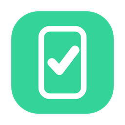

git-qaGIT-QA
AI が操作し、人が見て、1 打鍵で判定を置く。 検証シート（TSV）に沿って端末・ブラウザ・デスクトップアプリを動かします。
合格は AI が出しません。AI が出せるのは PASS まで。「人が見て保証した」は、人が押したときにだけ付きます。
版を読み込み中…
アルファ版
MIT / OSS
落とす
配布物は GitHub Releases に置いています。
Windows は署名していません。「WindowsによってPCが保護されました」が出ます。
出どころを確かめてから［詳細情報］→［実行］を押してください。
心当たりが無いときは入れないでください。
macOS は署名と公証をしていますので、そのまま開けます。
macOS は署名と公証をしていますので、そのまま開けます。
先に入っている必要があるもの
Node が要ります。アプリの中から実行器を動かすので、入っていないと 画面に理由を出して止まります。
| Node 22 以上 | 必須。入っていないと起動後に止まります |
|---|---|
| adb（Android SDK Platform Tools） | Android 端末を見るときだけ |
| Chrome / Edge / Firefox / Safari | ウェブを見るときだけ。入っているものを選べます（証跡に版が残ります） |
| ffmpeg / cwebp |
任意。無くても止まりませんが、証跡の絵と動画が変換されずに 撮れた形（.jpg
/ .mov）のまま残ります
|
最初の 3 手
- ハンドルを入れる 証跡に「誰が見たか」として残ります。個人名ではなく、名乗る名前を入れてください （公開リポジトリに出る前提の作りです）。
- 見る相手を決める Android 端末を選ぶ・URL を入れる・デスクトップアプリの名前（窓の持ち主）を入れる、 のどれかです。
-
検証シート（TSV）を選んで、始める
AI が 1 件ずつ操作し、人の番になったら止まります。 D 合格 /
F 不合格 / A 判断保留 / S 対象外。 押さずに
スペース で送ると
AUTO_PASSとして残ります （合格へ繰り上げません）。
鑑賞モード
押さなくても進みます。人は見ているだけで、AI が最後まで走ります。
| 押したら | その判定になります（見ていた人の判定として残ります） |
|---|---|
| 押さなかったら | AUTO_PASS。繰り上げません |
| 止めたいとき | Esc、または画面の［鑑賞を止める］。残りは判断保留として残ります |
試験 1 本を、1 つのフォルダにまとめる
検証シート・証跡・画面・動画が同じ所に積まれます。フォルダごと git で管理できます。
$ pnpm ws:init ./連絡先の検証 "連絡先の検証"
連絡先の検証/
git-qa.json … ここが 1 本の試験だという印
検証.tsv … 検証シート（自分で置く）
runs/ … 走らせると出来る
20260912-100000/
run.json
case-001/screen.webp · screen.webm
印を置かなければ、今までどおり（打った場所の runs/）です。
途中で止めて、次の日に続きから
止めた実行は、最初の画面に並びます。選ぶと、その実行に足します —— 昨日置いた判定を、もう一度置き直しません。
| 走らせていないケース | 証跡に書きません。「止めたので判断保留」と書くと、 走らせた末に判断保留になったケースと見分けが付きません |
|---|---|
| 途中かどうか | run.json に終わりの時刻が無ければ途中。それが目印です |
| シートが変わっていたら | 続きから走らせません。昨日の判定は、いまの文面に対して置かれたものでは ないので |
何が残るか
runs/<日時>/
run.json … 判定・手順・誰がいつ置いたか（1 件終わるたびに書きます）
case-001/
screen.webp … 判定を置く時点の画面
screen.webm … AI が操作している間の動画（鑑賞モードのとき）その機械の事情は書き込みません。シートの場所はワークスペースからの相対で 残るので、誰の機械でも同じ形になります（証跡に個人名が混ざらない）。
置かれた判定が何に対するものかは、後から確かめられます。 シートが書き換わっていれば 1 で落ちます。
$ pnpm check:run runs/<日時>/run.json
証跡: 20260911-190000
シート: サンプル 検証シート（docs/test-specs/001.tsv）
人が見て置いた判定: 4 件 / 全 5 件
検証対象は、走っている間ずっと同じいま何ができるか
| Android 端末 | USB で繋いだ実機・エミュレータ。触る・なぞる・文字を打つ |
|---|---|
| ウェブ | Chrome 系 / Firefox / Safari。同じ幅で見ます（崩れを比べられるように） |
| デスクトップアプリ | macOS だけ。前面に出さずに押せます。文字は AX と OCR の 2 段で読みます |
| AI エージェントから | MCP で繋げます（画面を撮る・文字を読む・触る） |
まだ出来ていないこと
| Windows のデスクトップ検証 | 画面を読む道具が macOS の API を使っています。Windows ではウェブと Android だけ |
|---|---|
| Windows の署名 | していません（証明書に物理トークンか HSM が要るため）。上の警告を踏みます。 macOS は署名・公証済みです |
| 自動更新 | ありません。新しい版はこのページから落とし直してください |
| 相手が入れ替わったかの検出 | デスクトップアプリだけ測れます。ウェブと Android は「測れなかった」と残ります （「変わっていない」とは書きません） |
中を見る・手元で動かす
落とさずに、クローンして動かすこともできます（開発はこちらです）。
git clone https://github.com/meta-taro/git-qa.git
cd git-qa
pnpm install
pnpm app